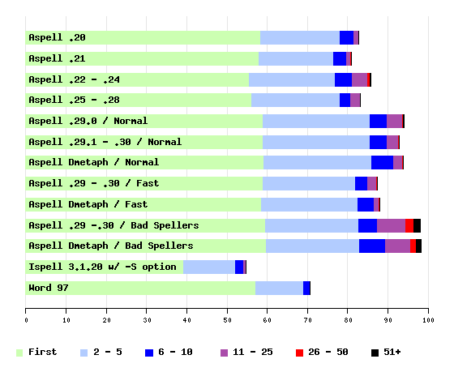

| Score | Total Not Found | Total Found | First | 1 - 5 | 1 - 10 | 1 - 25 | 1 - 50 | Any | |
|---|---|---|---|---|---|---|---|---|---|
| Aspell .20 | 82.8 | 88 | 424 | 58.4 | 78.1 | 81.6 | 82.8 | 82.8 | 82.8 |
| Aspell .21 | 80.9 | 98 | 414 | 58.0 | 76.6 | 79.7 | 80.7 | 80.9 | 80.9 |
| Aspell .22 - .24 | 85.7 | 73 | 439 | 55.5 | 77.0 | 81.1 | 85.0 | 85.5 | 85.7 |
| Aspell .25 - .28 | 83.2 | 86 | 426 | 56.2 | 78.1 | 80.9 | 83.2 | 83.2 | 83.2 |
| Aspell .29.0 / Normal | 93.9 | 31 | 481 | 59.0 | 85.5 | 89.8 | 93.6 | 93.8 | 93.9 |
| Aspell .29.1 - .30 / Normal | 92.8 | 37 | 475 | 59.0 | 85.5 | 89.8 | 92.6 | 92.8 | 92.8 |
| Aspell Dmetaph / Normal | 93.8 | 32 | 480 | 59.2 | 85.9 | 91.4 | 93.6 | 93.8 | 93.8 |
| Aspell .29 - .30 / Fast | 87.3 | 65 | 447 | 59.0 | 81.8 | 85.0 | 87.1 | 87.3 | 87.3 |
| Aspell Dmetaph / Fast | 88.1 | 61 | 451 | 58.6 | 82.6 | 86.5 | 87.9 | 88.1 | 88.1 |
| Aspell .29 -.30 / Bad Spellers | 98.0 | 10 | 502 | 59.6 | 82.8 | 87.3 | 94.5 | 96.5 | 98.0 |
| Aspell Dmetaph / Bad Spellers | 98.2 | 9 | 503 | 59.8 | 83.0 | 89.5 | 95.7 | 97.1 | 98.2 |
| Ispell 3.1.20 w/ -S option | 54.7 | 232 | 280 | 39.3 | 52.1 | 54.1 | 54.7 | 54.7 | 54.7 |
| Word 97 | 70.7 | 150 | 362 | 57.2 | 69.1 | 70.7 | 70.7 | 70.7 | 70.7 |
The Score is: (Total Found)/(Total)*100
First is: (Total Found First On List)/(Total)*100,
1-5 is: (Total Found 1st - 5th)/(Total)*100, etc...
Dmetaph is Aspell .30.1 which uses the Double Metaphone algorithm. Please see my Metaphone page for more information. To see which words Aspell with the Double Metaphone algorithm got and Aspell .30.1 did not, and vice versa, please see this file.

Graph created with Ploticus
| Min | 5% | 25% | 50% | 75% | 95% | Max | |
|---|---|---|---|---|---|---|---|
| Aspell .20 | 0 | 3 | 3 | 5 | 8 | 16 | 38 |
| Aspell .21 | 0 | 3 | 3 | 5 | 11 | 26 | 76 |
| Aspell .22 - .24 | 0 | 3 | 3 | 5 | 11 | 23 | 60 |
| Aspell .25 - .28 | 0 | 2 | 3 | 5 | 8 | 18 | 32 |
| Aspell .29.0 / Normal | 3 | 5 | 10 | 17 | 31 | 82 | 100 |
| Aspell .29.1 - .30 / Normal | 3 | 4 | 8 | 12 | 20 | 36 | 100 |
| Aspell Dmetaph / Normal | 3 | 4 | 8 | 13 | 19 | 37 | 77 |
| Aspell .29 - .30 / Fast | 0 | 2 | 5 | 10 | 17 | 33 | 96 |
| Aspell Dmetaph / Fast | 0 | 3 | 5 | 9 | 17 | 33 | 77 |
| Aspell .29 -.30 / Bad Spellers | 3 | 11 | 29 | 74 | 173 | 470 | 1000 |
| Aspell Dmetaph / Bad Spellers | 4 | 9 | 31 | 75 | 168 | 414 | 1000 |
| Ispell 3.1.20 w/ -S option | 0 | 0 | 0 | 1 | 3 | 9 | 25 |
| Word 97 | 0 | 0 | 1 | 2 | 4 | 10 | 20 |